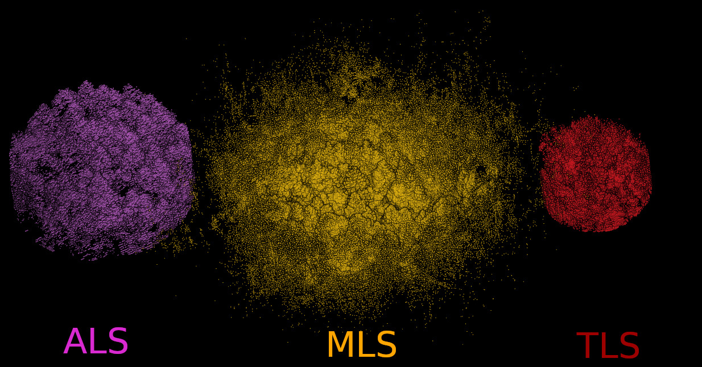
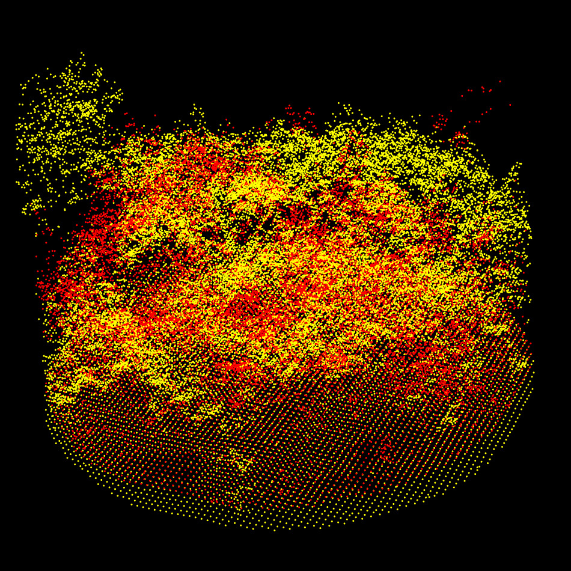
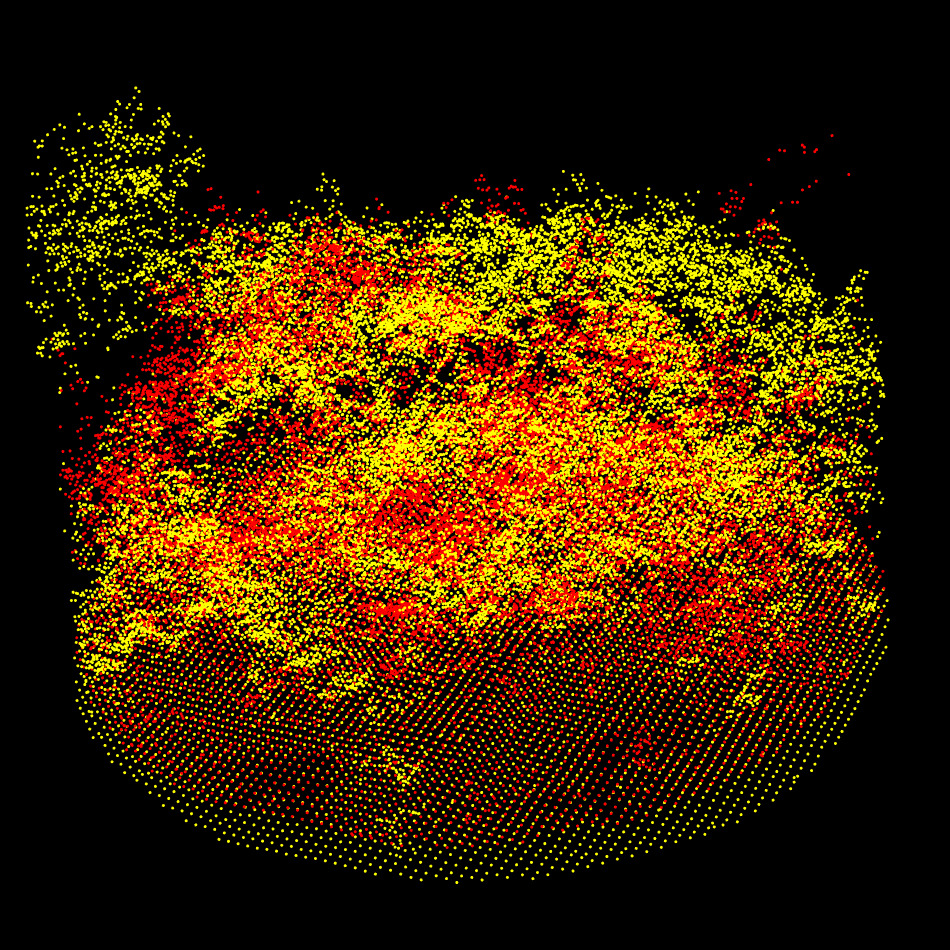
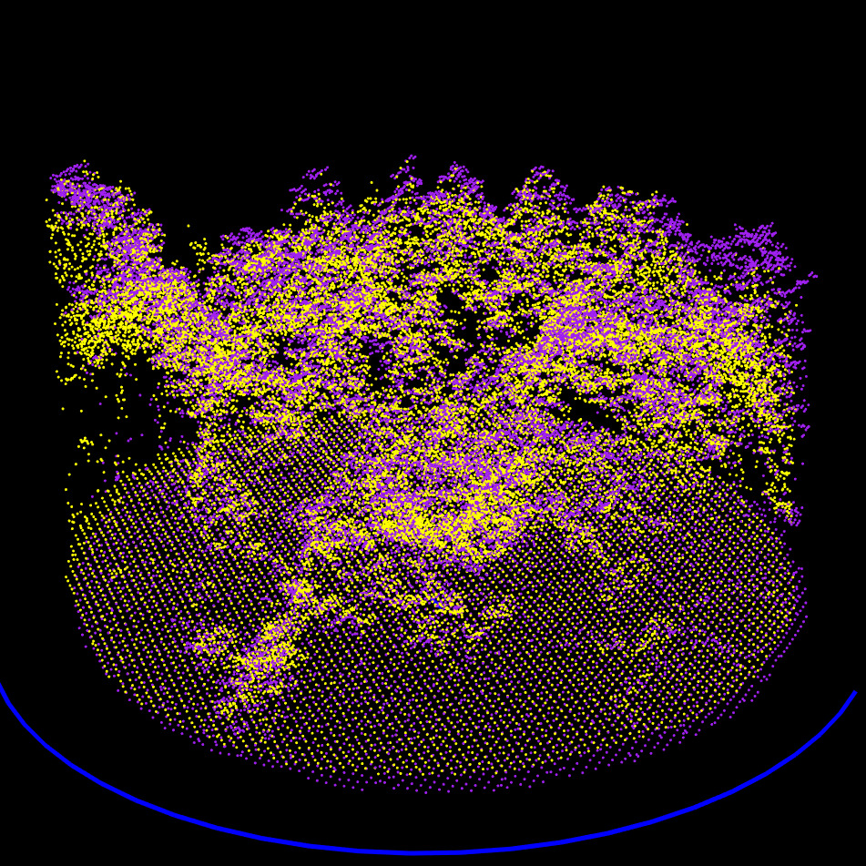
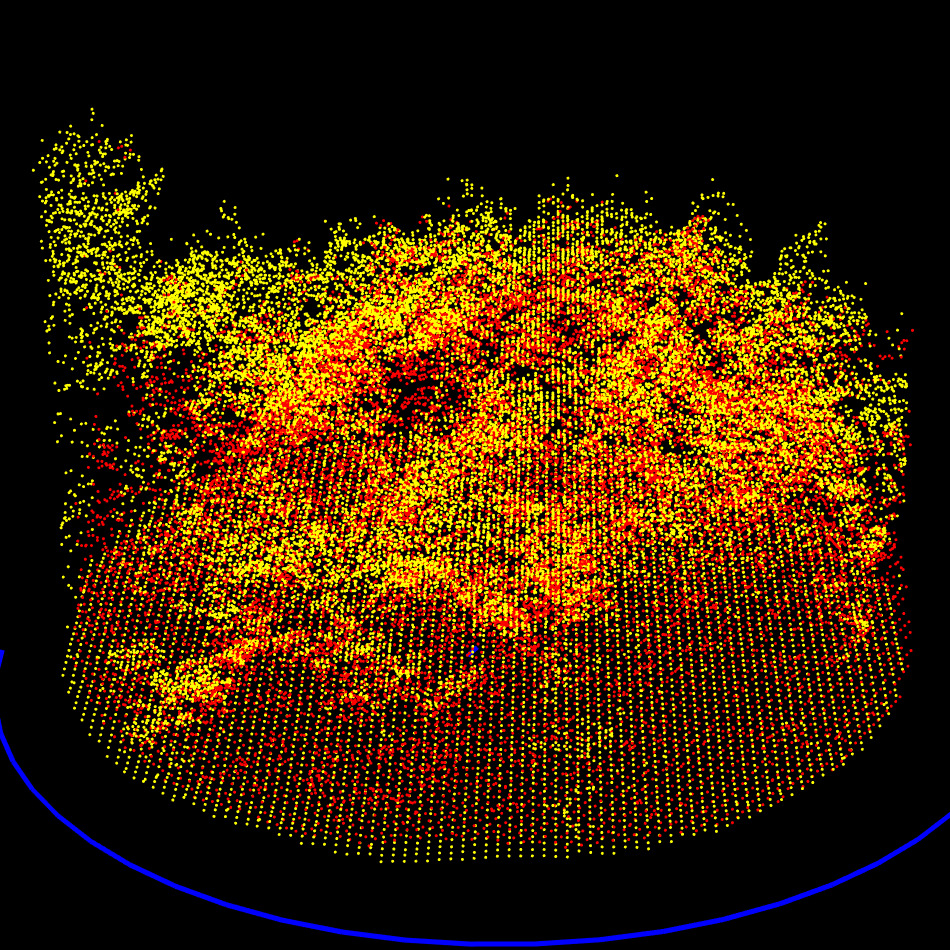
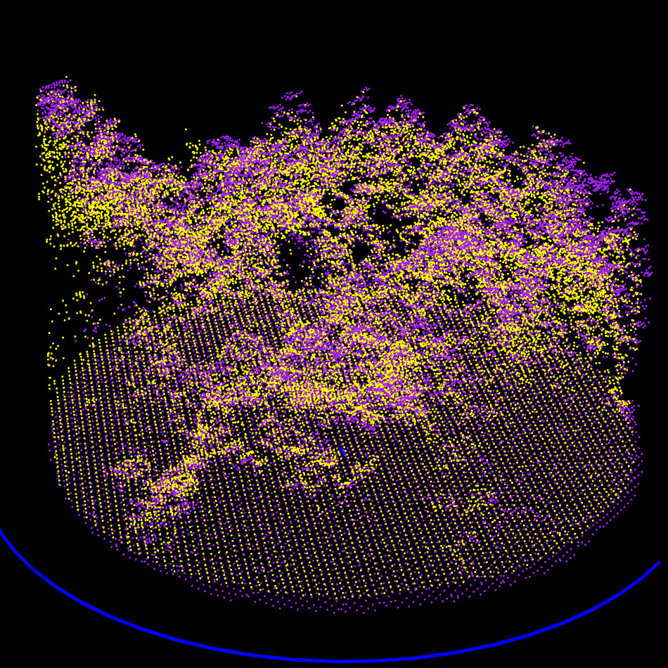
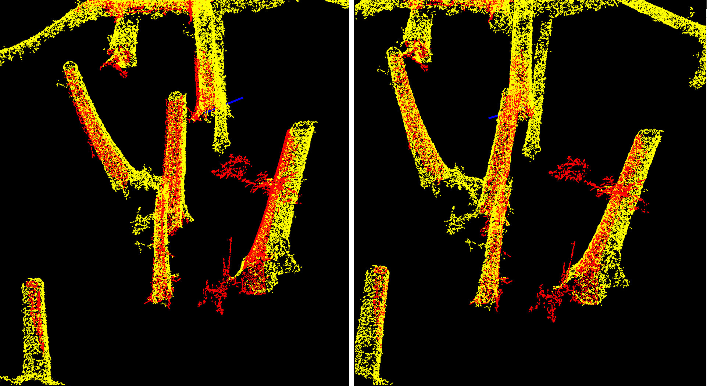
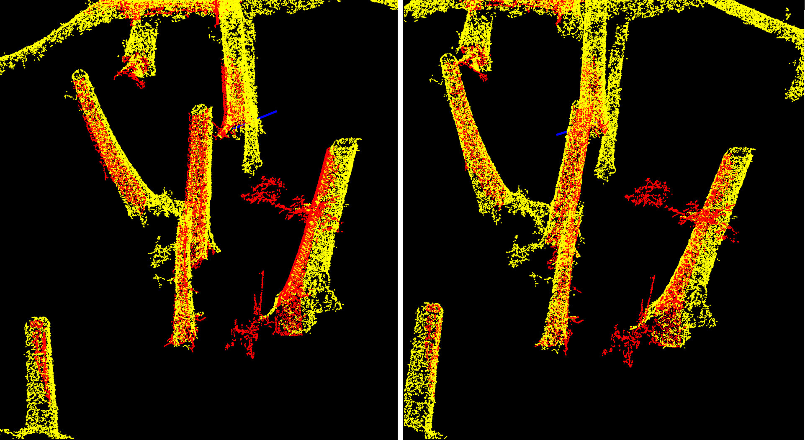

Description of the lidRalignment
internal algorithm
internal.RmdWhat problem are we trying to tackle?
The problem addressed by lidRalignment is the automatic
alignment of two 3D point cloud scenes in forest acquired from different
viewpoints, coordinate systems, times, or sensor modalities (e.g.,
terrestrial TLS or mobile MLS vs. aerial ALS or UAV). These point clouds
often represent the same physical environment, such as a forest stand,
but they are typically misaligned and structurally different, due to the
nature of each acquisition.
For instance, airborne data primarily captures the canopy and parts of the ground, while ground-based scans focus on tree stems and lower vegetation. As a result, the visible features in each dataset are often non-overlapping, especially in cluttered environments like forests.
Misalignments between two such scenes can arise from:
- Differences in sensor position or orientation,
- Errors during acquisition or fieldwork (e.g., incorrect GNSS positions),
- Or use of unrelated coordinate systems.
This may results in large translations and rotations, making direct comparison, fusion, or analysis of the two point clouds unreliable or even impossible without proper alignment.
The challenge is compounded by:
- Large differences in resolution and point density,
- Different viewpoints and visibility (e.g., top-down vs. ground-up),
- Partial overlap between scenes,
- Occlusions and noise,
- Inconsistent coordinate orientations (e.g., the Y-axis not aligned to true North).
Even aligning a mobile laser scan with a terrestrial laser scan, acquired from nearly the same location, can be extremely difficult due to occlusions, varying scan quality, inconsistent point densities, differing scan positions, and orientation errors as shown below
![Two scans of the same forest plot: left: MLS, right: TLS. In the MLS dataset, all trees are fully sampled, the scene coverage is nearly 100%, with minimal occlusion. In contrast, the TLS dataset consists of only five scans, leading to incomplete coverage: several trees are entirely missing or so sparsely sampled that they are effectively unusable. Most visible trees are scanned only from one side, resulting in significant occlusion and shadow zones. Despite representing the same physical location, these two point clouds differ substantially in terms of available and reliable matching features, which poses a real challenge for alignment.](mls.jpg)
Two scans of the same forest plot: left: MLS, right: TLS. In the MLS dataset, all trees are fully sampled, the scene coverage is nearly 100%, with minimal occlusion. In contrast, the TLS dataset consists of only five scans, leading to incomplete coverage: several trees are entirely missing or so sparsely sampled that they are effectively unusable. Most visible trees are scanned only from one side, resulting in significant occlusion and shadow zones. Despite representing the same physical location, these two point clouds differ substantially in terms of available and reliable matching features, which poses a real challenge for alignment.
As a result, standard point cloud registration techniques are not robust enough to handle the alignment of such disparate scenes. They may succeed only when the scenes are already roughly aligned (small rotations and translations, similar perspectives, and sufficient shared features). But in the general case—with misalignments on the order of 10 meters or 180°, and little to no overlap in geometric features—conventional techniques fail.
lidRalignment addresses this problem by:
- Extracting a few thousand robust points of interest that are more likely to represent corresponding structures in both datasets,
- Performing coarse alignment through a global search,
- And refining the registration through successive steps, ultimately achieving accurate alignment even in highly challenging scenarios.
An additional challenge is to achieve this alignment without requiring user-defined parameters, using a single, unified pipeline that works whether aligning aerial with aerial, aerial with terrestrial, or terrestrial with terrestrial data.
Illustration
This document is illustrated using a real-world example involving the alignment of a single forest plot. We demonstrate two alignment scenarios on the same inventory plot:
- Mobile Laser Scanning (MLS) aligned to Airborne Laser Scanning (ALS)
- Terrestrial Laser Scanning (TLS) aligned to MLS
The color scheme used in the illustrations is as follows: ALS – Purple; MLS – Yellow; TLS – Red
In the initial state:
- The ALS and TLS point clouds have already been clipped to the plot area.
- The MLS point cloud remains unprocessed, illustrating that the pipeline does not require any prior data preparation.
Importantly, the ALS point cloud is the only one that is georeferenced. The others are in arbitrary coordinate systems.
The initial misalignment between ALS and MLS includes a 135-degree rotation and substantial translation. This is a typical real-world scenario—particularly when scans are manually started in the field without precise orientation or GPS lock.
This example highlights the robustness of the
lidRalignment pipeline, which is specifically designed to
handle such misalignments without any prior assumptions about initial
positioning or orientation as well as much extreme case as we will see
later.

Step 1: Data Extraction
Step 1.1: Reading the Data
The alignment process begins by loading the point cloud data from file. ALS data are typically sparse and lightweight, but ULS, MLS, or TLS point clouds can contain hundreds of millions of points and span several gigabytes. Processing the full dataset at this scale is both inefficient and unnecessary.
In practice, successful alignment only requires a small subset of well-chosen points, typically on the order of a few thousand. This represents approximately: 0.001% of points for TLS and MLS, 0.01% for ULS, and 0.1% for ALS.
Therefore, we load only a random 10% subset of ground-based point clouds (TLS, MLS), while airborne data (ALS, ULS) are loaded in full. ALS datasets are already sparse and do not require further decimation at this stage.
Step 1.2: Radius Clipping
To ensure a high-quality and manageable point cloud, we clip the data to a 20-meter radius around the point cloud’s centroid. MLS and TLS data often include sparse and low-quality points beyond the intended plot boundaries, and we make no assumptions that the input has been pre-clipped.
This step reduces the spatial extent and focuses the alignment process on the most reliable data.
After clipping, we expect to have two (more or less) circular plots centered near the same physical location in the forest. While their centroids may differ in numerical coordinates, due to differing coordinate systems, they should correspond to the same real-world area. If not, the point clouds are not suitable for alignment.

ALS, MLS, and TLS datasets clipped to a 20 m radius (TLS was already clipped to 15 m). The bottom view shows that the TLS data was acquired from five scan positions, with sparse data visible between the scans.
Step 1.3: Ground Classification and Noise Filtering
We begin by filtering noise to remove significant outliers from the point cloud. Although this step is not critical—since the alignment process is robust to outliers—it simplifies the task and improves overall stability. We apply a fast isolated voxel filter that removes only the most obvious noise, without investing in fine-tuned denoising. At this stage, sampling noise is not a concern.
Next, we classify the ground. Again, this is not a critical step—we do not aim to produce a high-quality DTM, only one sufficient for alignment. We use the CSF algorithm with general-purpose parameters that perform well across various datasets. Crucially, all point clouds must be processed using the same classification method and settings. If a specific terrain feature is poorly segmented in one dataset, it will also be poorly segmented in the other, ensuring consistent DTM alignment despite imperfections.
For this reason, we do not rely on any pre-computed ground classification that may be present in the input files.
Step 1.4: Matching feature extraction
This step introduces the first real challenge: extracting matching features from point clouds that may look radically different. What features could an ALS dataset and a TLS dataset reliably share?
- Terrain shape?
- Canopy gap locations?
- Canopy gap shapes?
- Overall canopy surface shape?
Terrain shape is helpful when terrain is rugged, alignment through topography can be very effective. However, this approach is limited when the terrain is flat.
Canopy gap locations are robust features, present in all types of point clouds regardless of viewpoint or resolution.
Canopy gap shapes are also promising, but they are more complex to analyze and compare.
Canopy surface shape works well when aligning ALS with ULS, but MLS and especially TLS tend to produce poor-quality canopy models. That said, we only need a few thousand well-placed points to achieve good alignment. Even a single TLS point reaching the apex of a tree can be enough to help anchor the canopy model.
To capture all these characteristics in a unified way, we rely on the Canopy Height Model (CHM) and the Digital Terrain Model (DTM). The CHM encodes gap positions, gap shapes, and surface shape in a single object. This makes CHM and DTM a solid foundation for a general-purpose alignment pipeline that works across ALS, ULS, MLS, and TLS combinations (spoiler: it works).
The CHM is computed at a resolution of 0.25 meters, which is fine enough to capture essential features such as canopy gaps and surface structure, while still being robust to missing data in lower-quality TLS scans.
The DTM, on the other hand, is computed at a coarser resolution of 0.5 meters, using triangulation of classified ground points. This lower resolution is intentional: we want the DTM to contribute less to the alignment process. While the CHM is generally reliable across different forest types, the DTM is not. In flat terrain, for instance, the DTM only supports vertical (Z-axis) alignment and does not contributes to horizontal (XY) alignment. Worse, it may falsely boost the alignment score by appearing to align well regardless of actual registration quality.
By using half the resolution, the DTM contains one-quarter the number of pixels compared to the CHM, effectively giving it four times less weight in the alignment procedure.
With a 20-meter plot radius and raster resolutions of 0.25 m for the CHM and 0.5 m for the DTM, the total number of pixels (and thus points of interest) used for alignment is limited to a maximum of approximately 25,000. This keeps the process both efficient and robust.


CHM/DTM point clouds for the ALS (top left), MLS (top right) and TLS (bottom left). We can observe the difference of qualities between ALS, MLS and TLS. But nothing that prevent alignment. Canopy gaps, dominant tree, gaps shapes and DTM shapes are visible in all datasets.
Step 2: Centroid Alignment
We first normalize each point cloud by translating it so that its centroid is at the origin (0,0,0). This ensures that, regardless of their original coordinate systems, the two plots are numerically aligned in space. The transformation matrix used for this centering step is recorded for later use.
 

Step 3: Coarse Alignment
Step 3.1: Initial Brute Force Alignment
At this stage, the point clouds contain only the CHM and DTM-derived points, and their centroids are aligned. However, these centroids do not correspond to the true plot centers, and the two datasets may still be significantly misaligned, including large rotational errors of over 100°, which can occur due to field mistakes.
Traditional point cloud registration techniques, such as Iterative Closest Point (ICP) and its variants, are ineffective in such cases. These methods assume a reasonably good initial alignment, which cannot be assumed to be available here. Similarly, approaches based on e.g. plane extraction, as propose by some authors are not reliable enough for general-purpose forest scenes, where such features may be poorly defined or inconsistent.
Therefore, we apply a brute force alignment strategy: we exhaustively search over a set of rotation and translation parameters to find the transformation that minimizes the Root Mean Square Error (RMSE) between the two point clouds.
- Rotation search space: [−180°,180°] in steps of 2°
- Translation search space: [−8 m,+8 m] in steps of 0.5 m (in X and Y only)
- Z alignment: Handled separately via DTM; no brute force search needed
This results in approximately 60,000 candidate transformations to test. To keep the computation fast, we sub-sampled one random point per 2 meter voxel from the CHM/DTM point clouds reducing them from ~25,000 to ~2,000 points. This reduction is sufficient for finding a coarse alignment. We effectively started from 200 millions points down to 2000 points for alignment purpose. The brute-force search takes approximately 4 seconds on a laptop and is multithreaded.

The two sampled point clouds effectively used for the coarse alignment
Step 3.2: Refinement of Coarse Alignment
After identifying a promising transformation, we refine it using a second brute-force search, this time in a smaller neighborhood around the initial solution:
- Rotation resolution: 1°
- Translation resolution: 10 cm (X and Y)
This refinement step further improves the alignment and takes only a few extra millisecond second of additional computation time. The transformation matrix used for this registration step is recorded for later use.

RMSE Computation
RMSE is defined as the mean distance between each point in one cloud and its nearest neighbor in the other cloud. However, this metric becomes unreliable when the point clouds are not fully overlapping (e.g., if they are offset by 10 meters). In such cases, non-overlapping regions contribute large distances, which artificially inflate the RMSE. As a result, a well-aligned pairs may paradoxically yield a higher RMSE than a poorly aligned ones.
To address this, we compute RMSE using only the 50% of point pairs with the smallest distances. This simple heuristic is highly effective and avoids penalizing the metric due to partial overlaps or sparse sampling.
At the end of this step, the point clouds are now coarsely but reliably aligned in position and orientation. The process then proceeds to a finer registration.

Exhaustive exploration of all the possible rotations and translation to find the global minimum of RMSE. Here at approximatively -135 degrees and -1 meter on X
Step 4: Fine Alignment of CHM and DTM
Now that the point clouds are coarsely aligned and have shared features extracted, we can apply standard point cloud registration techniques such as ICP on the full 25,000 CHM/DTM-derived points. In our case, we use a variant of ICP with partial matching, referred to throughout this document simply as ICP. The technical details are provided in the appendix, but the key point is that we do not assume all features are present in both datasets, hence, a trimmed ICP is more appropriate.
The term partial refers to an overlap ratio, i.e., the expected percentage of points in the two datasets that truly correspond to each other. This step take approximately half a second.
Step 4.1: Fine Alignment in XY using trimmed ICP
We now apply ICP between the two CHM/DTM-derived point clouds, using a 90% overlap assumption. Although the CHM and DTM should ideally match 100%, in practice, differences in scanning modality (ALS, ULS, TLS, MLS), resolution, or sampling quality mean that some points will not have a corresponding match in the other dataset. Using a 90% overlap improves robustness to these discrepancies. In fact, this overlap parameter is not particularly sensitive here. Values between 70% and 90% all perform equally well in most cases.
Next, we refine the overlap estimate. The coarse alignment may result in a horizontal offset, for example, a 5-meter shift between the two clouds. Given that each cloud is circular with a 20-meter radius, this would reduce their actual geometric overlap to around 84%. We therefore conservatively set the overlap used in ICP to the minimum between 90% and the actual overlap, rounded down to the nearest 10%. In this case, we would use 80% overlap in the final fine alignment.
Partial overlap in point clouds is an extra challenge that required a trimmed ICP approach.
This final overlap value is critical. If it is not computed and adjusted accordingly, the ICP algorithm may fail to align the point clouds altogether. As mentioned earlier, when two circular plots are offset, a significant portion of each cloud may have no corresponding features in the other. The RMSE of the non aligned point cloud could be lower than the aligned one. If the ICP assumes a larger overlap than what actually exists, it may be misled by irrelevant point correspondences, leading to incorrect alignment or convergence failure. Adjusting the overlap to reflect the true shared region ensures robustness and stability of the fine alignment.
The transformation matrix used for this registration step is recorded for later use.

Step 4.2: Fine alignment on the Z axis using trimmed ICP
At this stage, the point clouds are accurately aligned in XY and the rotation has been precisely computed. However, the Z alignment may still require refinement.
The issue lies in the weighting between CHM and DTM during previous alignment steps. The CHM carries four times more weight than the DTM in the alignment procedure. This is appropriate for computing rotation and XY translation because canopy gap positions, tree positions, and gap shapes are reliable features for determining planar alignment, but problematic for Z. In particular, CHMs from TLS or MLS are often underestimated in height compared to ALS and ULS data, since it is difficult for ground-based sensors to capture the canopy apex. This is clearly visible in images of the section 1.4. As a result, the CHM-biased ICP can produce a Z-axis misalignment.
To correct this, we perform a final ICP step using only DTM points, with the following constraints:
- XY translations are fixed
- Rotational components are fixed
- Only Z translation is allowed
This constrained ICP has a single degree of freedom and fine-tunes the alignment in the Z direction using the terrain surface only.
At this point, the point clouds are fully and accurately registered. The remaining alignment error is on the order of 10 cm in XY and 1 or 2 cm in Z. This level of precision is sufficient for most applications and cannot realistically be improved, especially when the reference point cloud is from an ALS dataset.
However, further refinement is possible when both datasets are ground-based (e.g., MLS and TLS). In such cases, the trees themselves are well sampled and present in both point clouds. This opens the door for a final extra fine alignment step based on individual tree structures, which can yield to sub centimeter accuracy beyond what CHM/DTM-based methods allow.
Step 5 Extra fine alignment of trees
The extra fine alignment is available only if the two point clouds are ground-based. It extract the trees to apply an ICP on trees.
Step 5.1: Feature extraction
The goal of lidRalignment is not to segment trees, but to align point cloud. To do so, we must extract the tree anyway but we want to do it efficiently, not accuratly to keep computation time within a reasonable range. At this stage, we switch back to the original point cloud, not the CHM/DTM version.
To extract trees quickly and robustly, we follow this streamlined pipeline:
- Clip the point cloud between 0.15 m and 3 m above ground. The lower bound removes the ground; the upper bound ensures we capture enough of the trunks while reducing the point cloud size.
- Apply voxel decimation with a 3 cm resolution. This is purely for reducing computation time.
- Apply an aggressive 3D smoothing filter. We use a 5 cm radius to suppress MLS noise (typically 2–6 cm) and clear away fine, irrelevant structures. The aim is to reduce both noise and point count.
- Compute local anisotropy. Points with highly anisotropic neighborhoods are retained, as they correspond to linear and planar structures like trunks.
- Compute connected components and retain the 50 largest anisotropic features. These are likely to be trees. Some may be noise or non-tree structures, but that’s acceptable for alignment purposes.
The real challenge here is variability in point cloud quality. In high-quality datasets, we can reasonably expect the same trees to be extracted from both datasets but in poor TLS scans, occlusion and shadowing may fragment or partially obscure trees. Therefore, we do not assume that matching trees are systematically extracted—but some always are, and that’s sufficient.
This step typically takes about 30 secondes of computation time.
The 50 main anisotropic features extracted from each point cloud. As expected, they do not match perfectly, primarily due to the low quality of the TLS data, which suffers from significant occlusion, cast shadows and lack of scan positions (here 5 scans). Despite this, we typically have enough structure to perform a reliable alignment. In practice, even just three matching features would be sufficient for a registration in this context.
Step 5.2: Extra-fine feature alignment using trimmed ICP
With the extracted tree structures, we now perform an extra-fine alignment using trimmed ICP. The overlap is set to 30%, a critical parameter: since most of the extracted structures do not match between point clouds, a low overlap avoids introducing bias from unmatched regions.
At this stage, the datasets are already well aligned. This final ICP step targets sub-centimeter refinements, leveraging matching parts of trunks across scans.
 
Tree matching before (left) and after (right) extra fine alignment. We gained a few extra centimeters of translation and a few arcminutes of rotation.
Step 6: Full Registration
At this stage, we have up to 6 rigid transformation matrices:
- Two translation matrices to center each plot on (0,0,0) (2 matrices)
- The coarse registration matrix
- The fine registration matrix
- The Z-axis refinement matrix
- An optional extra fine registration matrix, used when both datasets are ground-based
These matrices are sequentially combined into a single final transformation matrix, which is then applied to the full-resolution point cloud. Typically, the ALS dataset is already georeferenced. We first align the MLS dataset to the ALS and assign it the ALS coordinate reference system (CRS). Then, the TLS dataset is aligned to the already registered MLS and inherits the same CRS.
Job done!
Trimmed ICP
The Iterative Closest Point (ICP) algorithm is widely used for aligning two 3D point clouds by minimizing the distance between corresponding points. It operates in iterations: in each step, the algorithm finds the nearest neighbor in the target cloud for every point in the source cloud. Based on these point pairs, it computes the best-fitting rigid transformation (a rotation and translation) that minimizes the total alignment error, then applies this transformation to the source cloud and repeats.
In the standard form of ICP, all point correspondences are used to compute the transformation, which can lead to poor results when parts of the clouds do not actually overlap — for instance, if there are occlusions, partial scans, or significant outliers.
Our method uses an approach known as trimmed ICP, inspired by CloudCompare. At each iteration, we still compute nearest neighbors for all source points, but we then sort these correspondences by distance and retain only a specified percentage (overlap%) of the best matches. These selected point pairs are used to estimate the transformation for that iteration. Crucially, the set of retained points can change from one iteration to the next, dynamically adapting as the alignment improves. This helps the algorithm focus only on regions where the two clouds truly overlap, leading to more stable and accurate convergence, even when large parts of the data don’t match.